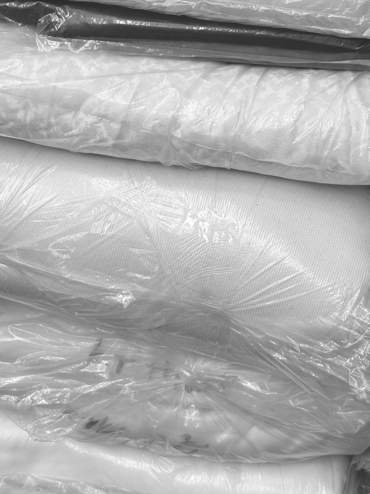
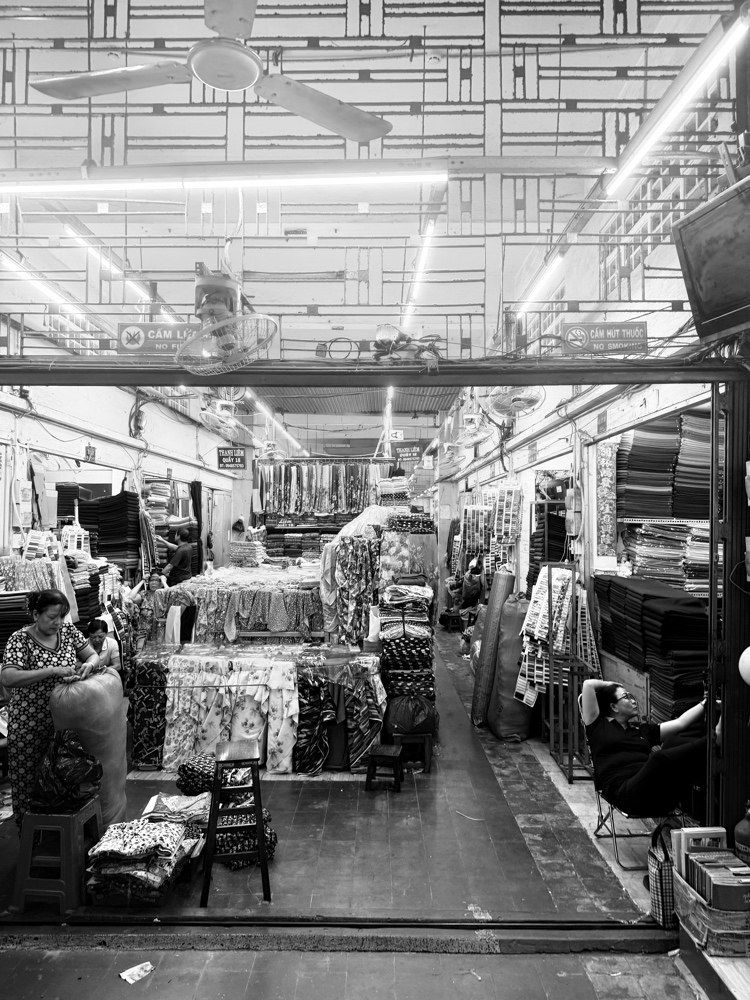

Today we stopped sewing and started writing. A Maison is not just bricks or fabric; it is a shared language. If we want to define the future of interaction between man and machine, we must first define the words we use.
We spent the day building the Lexicon. We are no longer guessing; we are speaking. We have defined the "Yorishiro" (The Vessel), the "Blason" (The Soul), and the "Comptoir" (The Exchange). By naming these concepts, we make them real. The universe is now locked.
The digital space is established. Now we build the physical shell.
I have spent the last 48 hours in the chaos of Soai Kinh Lam market, searching for the perfect weight. We are not looking for "fabric." We are looking for structure. We settled on two prototypes to define the "Fournil" (Bakery) aesthetic:
01. THE CRUST (Rust Canvas): A heavy, stiff material representing the bread. Fully lined with thick, raw unbleached cotton. It feels protective.
02. THE ENGINEER (Blue Canvas): A nod to the original French 'Bleu de Travail', but modernized. Unlined body for breathability, but lined sleeves for comfort.
The signature is the "Boulanger Twist." The sleeves are engineered to be rolled up—revealing the "Mie" (cream dough) raw cotton lining underneath. A boxy fit for movement. I will live in these shells for the next two weeks. We do not design on a screen; we design on the body.


My grandfather was a Baker. He worked with flour, yeast, and heat. He understood that to make something live, you must touch it. The bread has a soul because the hand was there.
Today, I look at the Engineer. He works with code, silicon, and electricity. He is the new Baker. But the machine he builds is naked. It is cold. It is efficient, but it is not yet present.
Maison Automata was born from a simple question: When the robots enter our homes, will we treat them as appliances (like a toaster) or as companions (like a dog)?
Project "Anima Machina" began as a private inquiry in Paris earlier this year. We spent six months in stealth, researching the intersection of textile physics and robotics. We are now breaking silence to define the aesthetics of the next century.
Aujourd'hui, nous avons arrêté de coudre pour écrire. Une Maison n'est pas seulement faite de briques ou de tissu ; c'est un langage commun. Si nous voulons définir l'avenir de l'interaction entre l'homme et la machine, nous devons d'abord définir les mots que nous utilisons.
Nous avons passé la journée à construire le Lexique. Nous ne devinons plus ; nous parlons. Nous avons défini le "Yorishiro" (Le Réceptacle), le "Blason" (L'Âme) et le "Comptoir" (L'Échange). En nommant ces concepts, nous les rendons réels. L'univers est désormais verrouillé.
L'espace numérique est établi. Maintenant, nous construisons la coque physique. J'ai passé 48 heures dans le chaos du marché Soai Kinh Lam, à la recherche du poids parfait. Nous avons arrêté notre choix sur deux prototypes pour définir l'esthétique "Fournil" : La Croûte (Rouille) et L'Ingénieur (Bleu).
La signature est le "Twist Boulanger". Les manches sont conçues pour être retroussées, révélant la "Mie" à l'intérieur. Je vais vivre dans ces coques pendant les deux prochaines semaines.
Mon grand-père était Boulanger. Il travaillait avec la farine, le levain et le feu. Il comprenait que pour donner vie à quelque chose, il faut le toucher. Le pain a une âme parce que la main était là.
Aujourd'hui, je regarde l'Ingénieur. Il travaille avec le code, le silicium et l'électricité. C'est le nouveau Boulanger. Mais la machine qu'il construit est nue. Elle est froide. Elle est efficace, mais elle n'est pas encore présente.
Maison Automata est née d'une question simple : Quand les robots entreront dans nos foyers, les traiterons-nous comme des appareils (comme un grille-pain) ou comme des compagnons (comme un chien) ?
Le projet "Anima Machina" a débuté comme une recherche privée à Paris plus tôt cette année. Nous avons passé six mois dans l'ombre à étudier l'intersection de la physique textile et de la robotique. Nous rompons maintenant le silence pour définir l'esthétique du siècle prochain.
Hoje parámos de costurar e começámos a escrever. Uma Maison não é apenas tijolos ou tecido; é uma linguagem partilhada. Se quisermos definir o futuro da interação entre o homem e a máquina, devemos primeiro definir as palavras que usamos.
Passámos o dia a construir o Léxico. Já não estamos a adivinhar; estamos a falar. Definimos o "Yorishiro" (O Vaso), o "Brasão" (A Alma) e o "Comptoir" (A Troca). Ao nomear estes conceitos, tornamo-los reais. O universo está agora trancado.
O espaço digital está estabelecido. Agora construímos a concha física. Passei as últimas 48 horas no caos do mercado Soai Kinh Lam, à procura do peso perfeito. Decidimos dois protótipos: A Codea (Ferrugem) e O Engenheiro (Azul).
A assinatura é o "Twist do Padeiro". As mangas são projetadas para serem arregaçadas — revelando o "Miolo" por baixo.
O meu avô era Padeiro. Trabalhava com farinha, fermento e calor. Ele compreendia que para dar vida a algo, é preciso tocar-lhe. O pão tem alma porque a mão esteve lá.
Hoje, olho para o Engenheiro. Ele trabalha com código, silício e eletricidade. É o novo Padeiro. Mas a máquina que ele constrói está nua. É fria. É eficiente, mas ainda não está presente.
Maison Automata nasceu de uma pergunta simples: Quando os robôs entrarem nas nossas casas, tratá-los-emos como eletrodomésticos (como uma torradeira) ou como companheiros (como um cão)?
O projeto "Anima Machina" começou como uma investigação privada em Paris no início deste ano. Passámos seis meses em segredo a pesquisar a interseção da física têxtil e da robótica. Estamos agora a quebrar o silêncio para definir a estética do próximo século.
今日、私たちは縫製を止め、書き始めました。メゾンとは単なるレンガや布ではなく、共有された言語です。人間と機械の相互作用の未来を定義したいのであれば、まず私たちが使う言葉を定義しなければなりません。
私たちは一日かけてレキシコン（語彙集）を構築しました。「依り代」（器）、「紋章」（魂）、そして「コントワール」（交換）を定義しました。これらの概念に名前を付けることで、それらを現実にします。宇宙は今、ロックされました。
デジタル空間は確立されました。今、私たちは物理的な殻を構築しています。私はSoai Kinh Lam市場で48時間を過ごし、完璧な重さを探しました。「Fournil」の美学を定義するために、クラスト（錆色）とエンジニア（青）の2つのプロトタイプを決定しました。
特徴的なのは「パン職人のツイスト」です。袖はまくり上げるように設計されており、下にある「クラム」（クリーム色の裏地）が現れます。
私の祖父はパン職人でした。彼は小麦粉、酵母、そして熱と共に働いていました。彼は、何かに命を与えるには、それに触れなければならないことを理解していました。そこに手があったからこそ、パンには魂が宿るのです。
今日、私はエンジニアを見ています。彼はコード、シリコン、電気と共に働いています。彼は新しいパン職人です。しかし、彼が作る機械は裸です。冷たいのです。効率的ですが、まだ存在していません。
Maison Automata は単純な問いから生まれました。ロボットが私たちの家に入ってくるとき、私たちはそれを家電（トースターのような）として扱うのか、それとも伴侶（犬のような）として扱うのか？
プロジェクト「Anima Machina」は、今年初めにパリでの個人的な探求として始まりました。私たちは6ヶ月間、テキスタイル物理学とロボット工学の交差点を研究し、秘密裏に活動してきました。今、沈黙を破り、次の世紀の美学を定義します。
今天我们停止了缝纫，开始写作。Maison 不仅仅是砖块或布料；它是一种共享的语言。如果我们想定义人与机器之间互动的未来，我们必须首先定义我们使用的词汇。
我们花了一天时间建立词典。我们不再猜测；我们在说话。我们定义了“依代”（容器）、“纹章”（灵魂）和“柜台”（交换）。通过命名这些概念，我们使它们成为现实。宇宙现在已锁定。
数字空间已经建立。现在我们构建物理外壳。我在 Soai Kinh Lam 市场度过了过去48小时，寻找完美的重量。我们确定了两个原型：外壳（铁锈色）和工程师（蓝色）。
标志性特征是“面包师的反转”。袖子被设计成卷起——露出下面的“面包心”（奶油色内衬）。接下来的两周我将生活在这些外壳中。
我的祖父是一位面包师。他与面粉、酵母和热量打交道。他明白，要赋予某物生命，你必须触摸它。面包之所以有灵魂，是因为有手的参与。
今天，我看着工程师。他与代码、硅和电打交道。他是新的面包师。但他制造的机器是裸露的。它是冷的。它是高效的，但它还未存在。
Maison Automata 诞生于一个简单的问题：当机器人进入我们的家庭时，我们将把它们视为电器（像烤面包机）还是伴侣（像狗）？
“Anima Machina”项目始于今年早些时候在巴黎的私人探索。我们秘密进行了六个月的研究，探索纺织物理学与机器人技术的交汇点。现在我们打破沉默，定义下个世纪的美学。